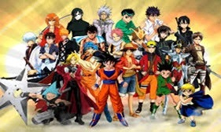
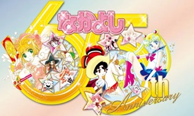
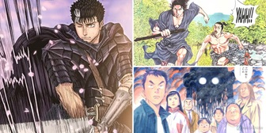
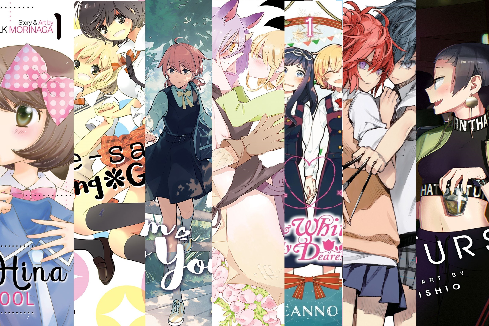
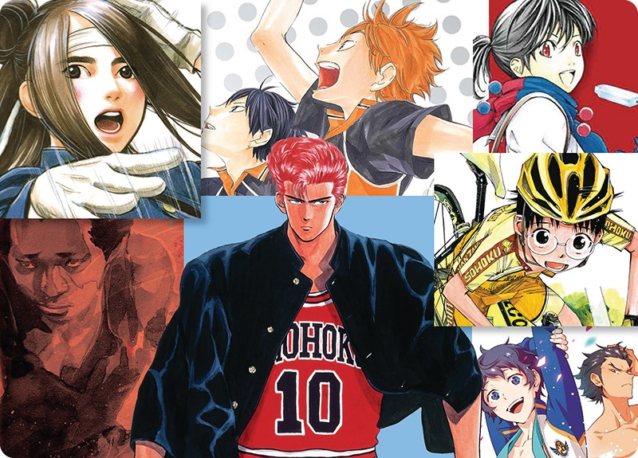
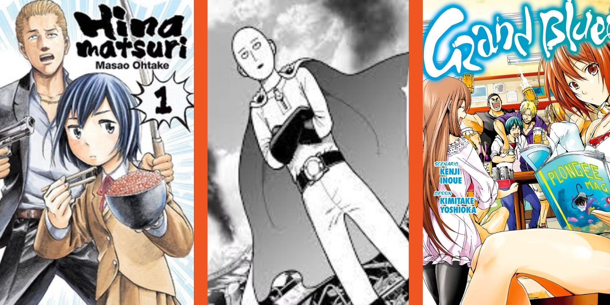
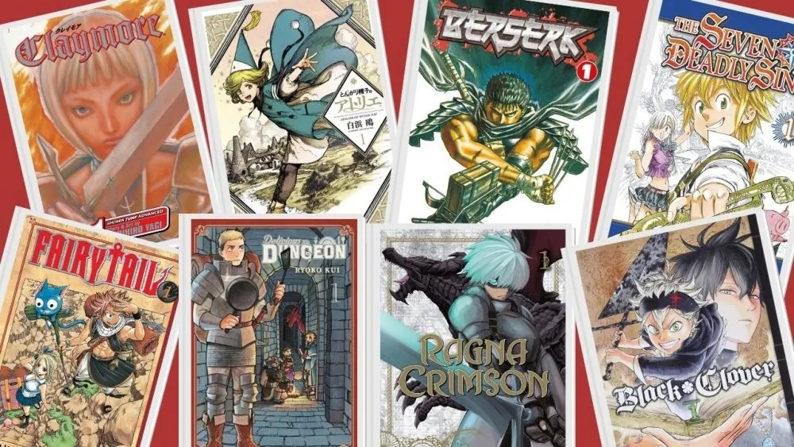
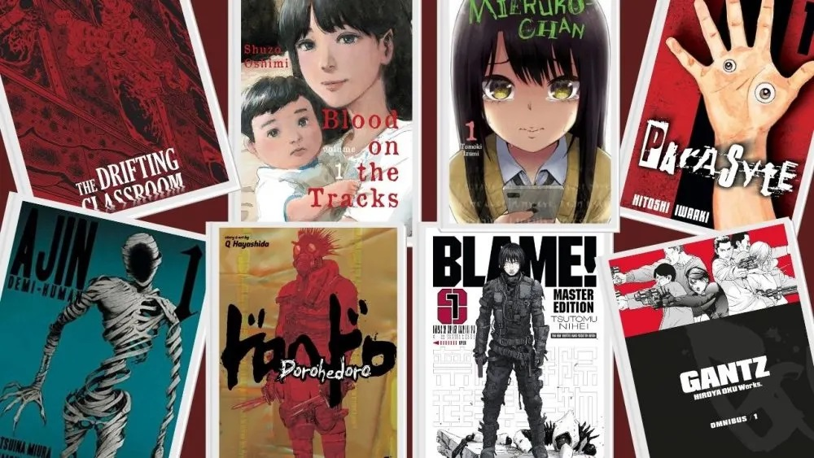

Shonen

shonen manga is characterized by action-packed storylines often
centered on themes of friendship, competition, and adventure.
Popular shonen manga series include One Piece, Naruto, and Dragon
Ball.
Shoujo

shoujo manga focuses on stories that revolve around romance,
friendship, and everyday life experiences. Some well-known shojo
manga series include Fruits Basket, Sailor Moon, and Kamisama Kiss.
Seinen

seinen manga explores more mature themes such as politics, business,
and complex relationships. Popular seinen manga series include
Berserk, Vagabond, and Vinland Saga.
Josei
Josei manga delves into intricate issues like love, loss, and
identity. Some notable josei manga series include Nana, Emma, and
Chihayafuru.
Yaoi
This genre features romantic relationships between male characters,
typically targeted at female readers but enjoyed by people of all
genders. Popular yaoi manga series include Gravitation, Loveless,
and Yuri on Ice.
Yuri

Similar to yaoi, yuri manga focuses on romantic relationships
between female characters, also typically aimed at female readers
but enjoyed by a wider audience. Some popular yuri manga series
include Kimi ni Todoke, Citrus, and Bloom Into You.
Sports

Sports manga revolves around the world of sports, often with a
competitive edge. Popular subgenres include baseball, basketball,
soccer, and martial arts. Some well-known sports manga series
include *Haikyuu!!, Kuroko's Basketball, and Diamond no Ace.
Slice of Life
Slice of life manga focuses on the everyday lives of its characters,
often emphasizing humor and relatable situations. Some popular slice
of life manga series include *Yotsuba&!, *K-On!, and Non Non Biyori.
Comedy

Comedy manga aims to elicit laughter and amusement through various
comedic elements, such as slapstick humor, character interactions,
or witty dialogue. Popular comedy manga series include Gintama,
Grand Blue Dreaming, and The Way of the Househusband.
Fantasy

Fantasy manga transports readers to fictional worlds filled with
magic, mythical creatures, and extraordinary elements. Popular
fantasy manga series include Fullmetal Alchemist, Berserk, and
Claymore.
Science Fiction
Science fiction manga explores futuristic concepts, technological
advancements, and often space exploration. Popular science fiction
manga series include Akira, Ghost in the Shell, and Neon Genesis
Evangelion.
Horror

Horror manga aims to evoke fear, suspense, and a sense of unease
through various elements such as supernatural occurrences,
psychological thrills, or disturbing imagery. Popular horror manga
series include Uzumaki, Junji Ito's Itou Junji Collection, and
Another.